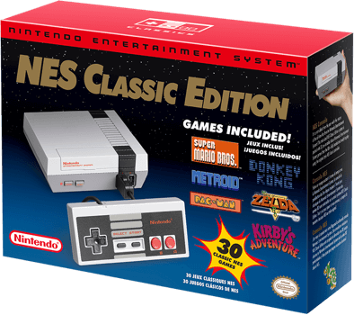

Posted: December 9th, 2016
Nintendo's cute new mini NES -- aka NES Classic Edition -- is really hard to find. The tiny $60 Nintendo Entertainment System is currently sold out in most places, but you still may able to snag one... eventually.
Update December 9, 6:21 p.m. PT: All three stores have sold out. Amazon did announce on its Twitter account that there will be more opportunities to purchase the console during the holiday season, so keep your eyes peeled for more announcements.
And Amazon's not the only place offering the NES Classic:
Some Best Buy customers have been receiving promotional emails stating it will restock the NES Classic on December 20 in-store. They will be in limited quantities and will be available on a first-come, first-serve basis.
ThinkGeek will be be doing a lottery-type sale December 12, starting at 7 a.m. PT. If you would like to enter the raffle, you'll need to put the NES Classic in your Wish List on the site. Winners will be randomly selected and emailed a unique code and link to buy it. If the code isn't used in 24 hours, it goes back into the lottery.
When Amazon began selling the little console earlier in November, it sold out within minutes. In fact, the site crashed. Since then, sellers have been posting units for sale, but for at a hefty price. The cheapest unit I've seen was $233 and some sellers are asking much more.
Chunk Toys says it has consoles in stock, but for the whopping price of $499.99. The price seems to fluctuate around $100 every week or so, so you may want to keep an eye on this one. The NES Classic Edition can be found on eBay if you can't find it anywhere else. Be warned, though: Like on Amazon -- and just about everywhere else -- people are charging $200 and more. The Nintendo Store in New York restocks the new NES at its original price every now and then. Keep an eye on its Twitter and Facebook feeds to get the latest info.
The mini NES has been available in-store at GameStop. Call your local stores to see if they have any in stock. It was available online for a few minutes, but GameStop's website crashed under the strain. Newegg has the Nintendo NES Classic Mini European version for $220.
Posted: October 20th, 2016